10 データの結合
利用するパッケージを読み込みます。
10.1 データフレームの結合
次に、よく使うのだけれど、結構ややこしいデータフレームの結合(merge)について説明します。 データフレームの結合には、基本関数のcbind()やrbind()を使うこともできますが、tidyverseのdplyrパッケージのJOIN関数を使うと、より簡単に結合できます。
日本の自動車メーカーの会計情報を使います。 まずはdata.frame()関数を使って、name，year，saleという3つの変数をもつデータフレームを作成します。
本によっては、data.frame()関数の代わりにtibble()関数を使ってデータフレームを作成するようにしているものもあります。 tibble()関数は、data.frame()関数の代わりに使うことができ、作成されるデータフレームにはtibbleというクラスが付与されます。 tibbleクラスのデータフレームは、data.frameクラスのデータフレームと比べて、便利な特徴が与えられていますが、ここでは基本関数data.frame()を使ってデータフレームを作成します。
df_car <- data.frame( # データフレームを作成
name = c(rep("トヨタ",2),rep("日産",2),rep("ホンダ",2)), # 企業名
year = rep(c("2022", "2023"),3), # 年度
sale = c(31379507,37154298,8424585,10596695,14552696,16907725) # 売上高
)
df_car |> kable() |> kable_styling(font_size = 24)| name | year | sale |
|---|---|---|
| トヨタ | 2022 | 31379507 |
| トヨタ | 2023 | 37154298 |
| 日産 | 2022 | 8424585 |
| 日産 | 2023 | 10596695 |
| ホンダ | 2022 | 14552696 |
| ホンダ | 2023 | 16907725 |
10.2 データを縦に結合する
データを縦に結合する，ということは，データフレームの行を追加することです。具体的には観測値を追加することになり，変数の数は変わりません。
2つのデータフレームを結合して行だけが増える結合を縦結合、 列が増える結合を横結合と呼びます。
ここでは，作成したdf_carに、各社2024年の売上高のデータが入ったデータフレームdf_car_2024を追加したいとします。 2024年度の業績予想データが入ったデータフレームを作成します。
df_car_2024 <- data.frame(
name = c("トヨタ", "日産", "ホンダ"),
year = c(rep(2024,3)),
sale = c(38000000, 12400000, 18200000)
)
df_car_2024 |> kable() |> kable_styling(font_size = 24)| name | year | sale |
|---|---|---|
| トヨタ | 2024 | 38000000 |
| 日産 | 2024 | 12400000 |
| ホンダ | 2024 | 18200000 |
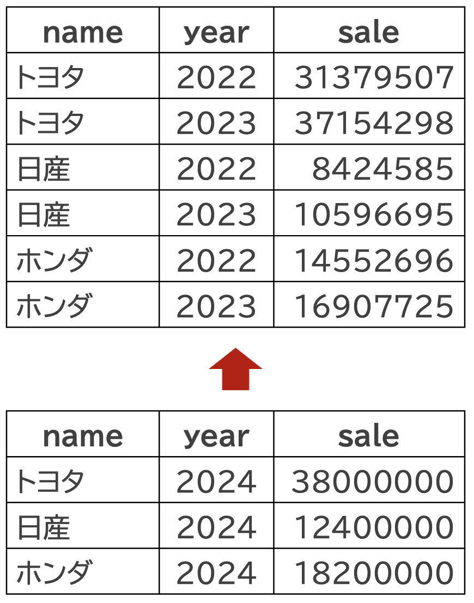
2つのデータフレームを縦に結合するには、基本関数のrbind()を使うか、dplyrパッケージのbind_rows()関数を使います。
10.2.1 rbind()関数の場合
rbind()関数を使う場合は、以下のようにします。
df_car_add <- rbind(df_car, df_car_2024)
df_car_add |> kable() |>
row_spec(7:9, bold = TRUE, background = 'mistyrose')| name | year | sale |
|---|---|---|
| トヨタ | 2022 | 31379507 |
| トヨタ | 2023 | 37154298 |
| 日産 | 2022 | 8424585 |
| 日産 | 2023 | 10596695 |
| ホンダ | 2022 | 14552696 |
| ホンダ | 2023 | 16907725 |
| トヨタ | 2024 | 38000000 |
| 日産 | 2024 | 12400000 |
| ホンダ | 2024 | 18200000 |
データフレームに下から新たなデータが加わっていることが分かります。 たとえ，変数の順番が異なっていたとしても，変数名が一致していれば，簡単にデータを縦に結合することができます。 saleとyearの変数の順番を入れ替えてみます。
df_car_2 <- data.frame(
name = c("トヨタ", "日産", "ホンダ"),
sale = c(38000000, 12400000, 18200000),
year = c(rep(2024,3))
)
df_car_add2 <- rbind(df_car, df_car_2)
df_car_add2 |> kable() |>
row_spec(7:9, bold = TRUE, background = 'mistyrose')| name | year | sale |
|---|---|---|
| トヨタ | 2022 | 31379507 |
| トヨタ | 2023 | 37154298 |
| 日産 | 2022 | 8424585 |
| 日産 | 2023 | 10596695 |
| ホンダ | 2022 | 14552696 |
| ホンダ | 2023 | 16907725 |
| トヨタ | 2024 | 38000000 |
| 日産 | 2024 | 12400000 |
| ホンダ | 2024 | 18200000 |
上手くいきました。 しかし変数の数や名前が一致しないと， match.names(clabs, names(xi)) でエラー: 名前が以前の名前と一致しませんというエラーがでて結合できません。 したがってrbind()関数は変数名と変数の数が一致するデータフレーム同士の縦結合であれば、適切な処理が行われるため、names()関数やdplyr::rename()関数を使って，変数名が一致するように変更しておきましょう。
10.2.2 bind_rows()関数の場合
dplyrパッケージのbind_rows()関数は、2つのデータフレームの変数名を参照して縦結合をしてくれます。 bind_rows()を使う場合は、以下のようにします。
df_car |> bind_rows(df_car_2024)10.3 データを横に結合する
データを横に結合する，とは，データフレームの列を追加することです。具体的には変数を追加することになり，観測値の数は変わりません。 ただ縦の結合とは異なり，横の結合は少し複雑になります。
データを横に結合する方法の1つは，基本関数のcbind()を使うことです。 データフレームdf_carに，各社の(親会社株主に帰属する)当期純利益niもデータフレームに追加したいとします。 niを変数とするデータフレームを作成します。
df_car_ni <- data.frame(
name = c(rep("トヨタ",3),rep("日産",3),rep("ホンダ",3)),
year = rep(c("2022", "2023", "2024"),3), # 時点
ni = c(2850110, 2451318, 2580000,
215533, 221900, 315000,
707067, 651416, 800000)
)
df_car_ni |> kable() |> kable_styling(font_size = 24)| name | year | ni |
|---|---|---|
| トヨタ | 2022 | 2850110 |
| トヨタ | 2023 | 2451318 |
| トヨタ | 2024 | 2580000 |
| 日産 | 2022 | 215533 |
| 日産 | 2023 | 221900 |
| 日産 | 2024 | 315000 |
| ホンダ | 2022 | 707067 |
| ホンダ | 2023 | 651416 |
| ホンダ | 2024 | 800000 |
これをdf_car_addに右から結合します。
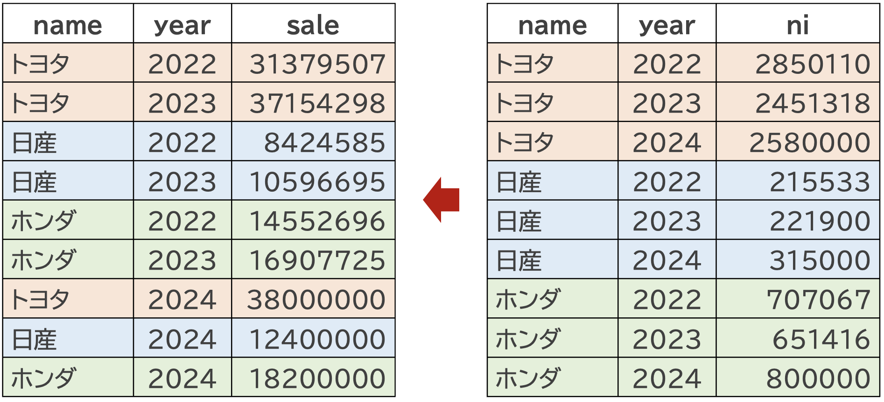
df_cbind <- cbind(df_car_add, df_car_ni)
df_cbind| name | year | sale | name | year | ni |
|---|---|---|---|---|---|
| トヨタ | 2022 | 31379507 | トヨタ | 2022 | 2850110 |
| トヨタ | 2023 | 37154298 | トヨタ | 2023 | 2451318 |
| 日産 | 2022 | 8424585 | トヨタ | 2024 | 2580000 |
| 日産 | 2023 | 10596695 | 日産 | 2022 | 215533 |
| ホンダ | 2022 | 14552696 | 日産 | 2023 | 221900 |
| ホンダ | 2023 | 16907725 | 日産 | 2024 | 315000 |
| トヨタ | 2024 | 38000000 | ホンダ | 2022 | 707067 |
| 日産 | 2024 | 12400000 | ホンダ | 2023 | 651416 |
| ホンダ | 2024 | 18200000 | ホンダ | 2024 | 800000 |
df_carの右側にdf_car_niが結合されていることが分かります。 しかし、この結合に問題があることは一目瞭然です。 重複した変数があるうえに、nameやyearの順番がバラバラです。 つまり行が観測値を表しておらず、整然データではなくなりました。
この問題を解決するためには、nameとyearの2つの変数をキーとして、データを結合する必要があります。 このような結合をマージと呼びます。以下では、マージの方法を説明します。
10.3.1 JOIN関数を使う
データフレームの結合は基本関数でもできますが、tidyverseのdplyrパッケージのJOIN関数が便利です。
10.3.2 JOIN関数
dplyrパッケージのJOIN関数には、以下の4つがあります。
-
inner_join(): 内部結合 -
left_join(): 左外部結合 -
right_join(): 右外部結合 -
full_join(): 完全外部結合
それぞれの結合の結果をベン図で表すと以下のようになります。
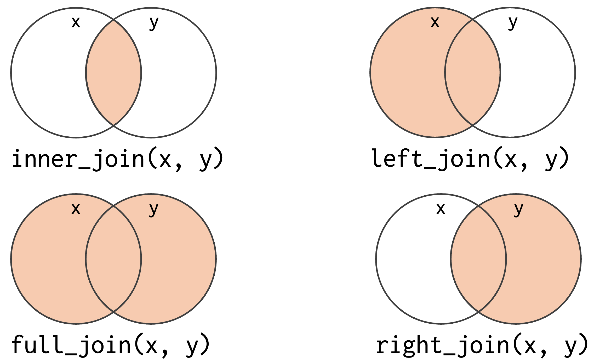
結合のイメージ図は以下の通りです(この図は、Hadley Wickham, Mine Çetinkaya-Rundel, and Garrett Grolemundによる”R for Data Science”の図を引用しています)。

内部結合は、2つのデータフレームの共通の変数の値が一致する行のみを抽出するため、結合後のデータフレームが非常に小さくなりがちであるため、ほとんど使用しません。 最も利用する可能性が高いのは、結合元のデータフレームのすべての行を残す左外部結合です。 これはdplyr::left_join()で実行できます。
10.3.2.1 左外部結合
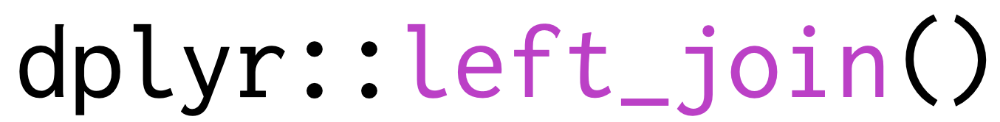
left_join()の引数は、以下の通りです。
-
x: 結合元のデータフレーム -
y: 結合するデータフレーム -
by: 結合する変数
df_carとdf_car_niをnameとyearの2つの変数をキーとして左外部結合します。 ここで重要なことは，キーとなる変数で観測値がユニークになっている，ということです。 ここの例だと，nameがトヨタ，yearが2023，という観測値(つまり行)は1つだけになっている，ということです。
JOIN関数で2つのデータフレームを結合するときは，1つ以上のキーとなる変数が，結合元のデータフレームと結合するデータフレームの両方に存在し，またキーの値により行が一意に決まる，つまり観測値がユニークになっていることが重要です。
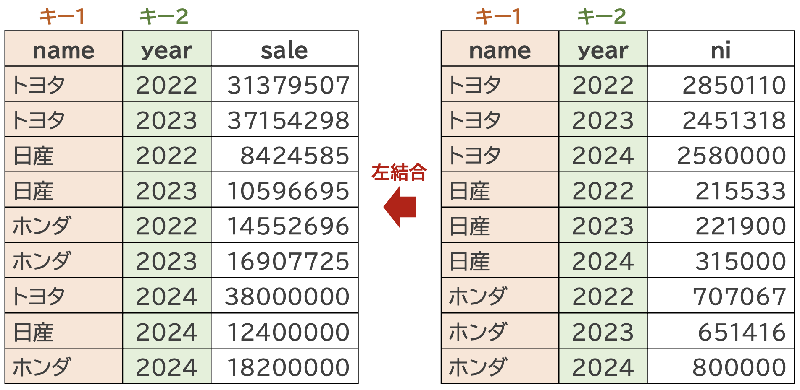
dplyrパッケージのleft_join()関数次のようにします。
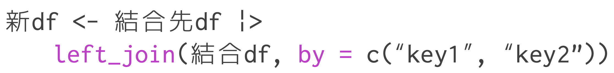
# nameとyearで左外部結合
df_car_left <- df_car_add |> # 結合先
left_join(df_car_ni, by = c("name", "year")) # 結合元
# 表にする
df_car_left |> kable() |>
column_spec(4, bold = TRUE, background = 'mistyrose')| name | year | sale | ni |
|---|---|---|---|
| トヨタ | 2022 | 31379507 | 2850110 |
| トヨタ | 2023 | 37154298 | 2451318 |
| 日産 | 2022 | 8424585 | 215533 |
| 日産 | 2023 | 10596695 | 221900 |
| ホンダ | 2022 | 14552696 | 707067 |
| ホンダ | 2023 | 16907725 | 651416 |
| トヨタ | 2024 | 38000000 | 2580000 |
| 日産 | 2024 | 12400000 | 315000 |
| ホンダ | 2024 | 18200000 | 800000 |
この結果をみると、うえで行ったcbind()関数とは異なり、結合のキーに指定したnameとyearの順番が揃っていることが分かります。
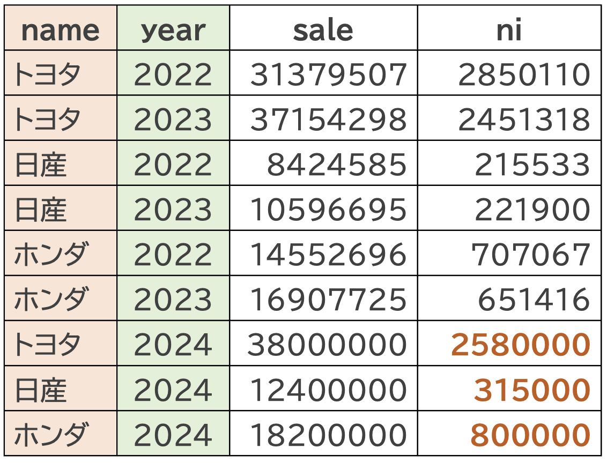
ここまでで，変数の数と名前が一致するデータフレーム同士の縦結合と，キーとなる変数で観測値がユニークになっているデータフレーム同士の横結合を説明しました。
次は，観測値が異なるデータフレームの結合や，キーにより観測値がユニークにならないデータフレームの結合について説明します。
10.4 異なるサイズのデータフレームの結合
df_car_addとdf_car_niは、同じサイズのデータフレームでしたが、異なるサイズのデータフレームを結合することもできます。 たとえば、元のdf_carに、マツダの2022年と2023年の売上高を追加してみます。
df_car_mazda <- data.frame(
name = c("マツダ", "マツダ"),
year = c(2022, 2023),
sale = c(3120349, 3826752)
)
df_car_mazda <- rbind(df_car,df_car_mazda)
df_car_mazda| name | year | sale |
|---|---|---|
| トヨタ | 2022 | 31379507 |
| トヨタ | 2023 | 37154298 |
| 日産 | 2022 | 8424585 |
| 日産 | 2023 | 10596695 |
| ホンダ | 2022 | 14552696 |
| ホンダ | 2023 | 16907725 |
| マツダ | 2022 | 3120349 |
| マツダ | 2023 | 3826752 |
これにdf_car_niを左外部結合するとどうなるか確認してみましょう
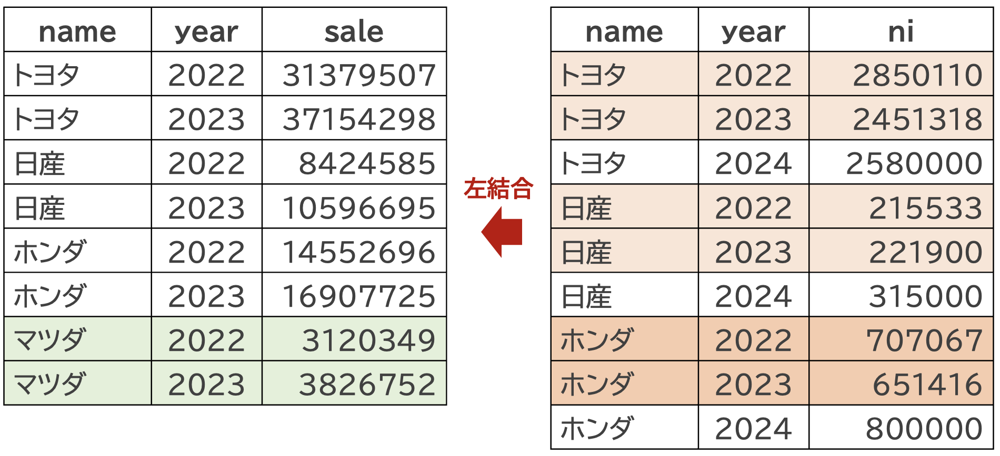
df_car_mazda_left <- df_car_mazda |>
left_join(df_car_ni, by = c("name", "year"))
df_car_mazda_left |> kable() |>
row_spec(7:8, bold = TRUE, background = 'mistyrose')| name | year | sale | ni |
|---|---|---|---|
| トヨタ | 2022 | 31379507 | 2850110 |
| トヨタ | 2023 | 37154298 | 2451318 |
| 日産 | 2022 | 8424585 | 215533 |
| 日産 | 2023 | 10596695 | 221900 |
| ホンダ | 2022 | 14552696 | 707067 |
| ホンダ | 2023 | 16907725 | 651416 |
| マツダ | 2022 | 3120349 | NA |
| マツダ | 2023 | 3826752 | NA |
左外部結合は，結合元のデータフレームのすべての行を残すため，結合後のデータフレームの行数は結合元のデータフレームの行数と同じになります。 したがって，df_car_mazdaの行数は8行のままで，niという変数が追加されていますが，マツダの2022年と2023年のデータにはNAが入っています。 結合するデーレフレームdf_car_niに入っていた2024年のデータは、結合先のdf_car_mazdaには存在しないためです。 基本的に主となるデータフレームのデータを維持したいことがおおいため，左外部結合を使うことが多いです。
10.5 観測値がユニークでない場合
キー変数で行がユニークにならないとき，1対多や多対1，多対多の関係があり，結合後のデータフレームの行数が増えることになります。 どのような挙動になるのかを理解して，データフレームの結合を行いましょう。 理想的には，1対1対応となるように，データを整理してから結合するのが望ましいです。
- 1対多の結合 : 結合するデータフレームがユニークでない
- 多対1の場合 : 結合先のデータフレームがユニークでない
- 多対多の場合 : どちらのデーレフレームもユニークでない
それぞれのケースに対して，left_join()関数を適用した結果がどうなるのかを理解しておきましょう。
10.5.1 多対1の結合
以下の例だと，結合元のデータフレームdf_carには，ホンダの2023年のデータが2つあります。
df_car_duplicate <- data.frame( # データフレームを作成
name = c(rep("トヨタ",2),rep("日産",2),rep("ホンダ",3)),
year = c(rep(c("2022", "2023"),3), 2023), # 時点
sale = c(31379507,37154298,8424585,10596695,14552696,16907725,18706224) # 気温
)
df_car_duplicate |> kable() |>
row_spec(7, bold = TRUE, background = 'mistyrose')| name | year | sale |
|---|---|---|
| トヨタ | 2022 | 31379507 |
| トヨタ | 2023 | 37154298 |
| 日産 | 2022 | 8424585 |
| 日産 | 2023 | 10596695 |
| ホンダ | 2022 | 14552696 |
| ホンダ | 2023 | 16907725 |
| ホンダ | 2023 | 18706224 |
このデータフレームには，ホンダの2023年のデータが2つあります。 たとえば，IFRS採用直後だと日本基準とIFRSのデータが記載されていることがあり，このように企業名と年度だけでは観測値がユニークにならないことがあります。
このデータフレームにdf_car_niを左外部結合するとどうなるか確認してみましょう
df_car_duplicate_left <- df_car_duplicate |>
left_join(df_car_ni, by = c("name", "year"))
df_car_duplicate_left |> kable() |>
row_spec(6:7, bold = TRUE, background = 'mistyrose')| name | year | sale | ni |
|---|---|---|---|
| トヨタ | 2022 | 31379507 | 2850110 |
| トヨタ | 2023 | 37154298 | 2451318 |
| 日産 | 2022 | 8424585 | 215533 |
| 日産 | 2023 | 10596695 | 221900 |
| ホンダ | 2022 | 14552696 | 707067 |
| ホンダ | 2023 | 16907725 | 651416 |
| ホンダ | 2023 | 18706224 | 651416 |
結合先のデータフレームがキーにでユニークになっていないので，エラーになるかと思いきや，エラーにならずに結合され，ホンダの2023年の2つの観測値に同じ当期純利益の数値が入っています。
多対1の場合は，結合先のデータフレームのキーが重複している行に，結合元のデータを割り当て，重複分だけ結合後のデータフレームの行数が増えてしまいます。
10.5.2 1対多の結合
逆のケースもやってみましょう。 結合元のデータフレームはユニークだが，結合するデータフレームがユニークではない場合です。 先ほどの例とは逆に，df_car_niにdf_car_duplicateを左外部結合するとどうなるか確認してみましょう
# 左外部結合
df_car_ni_duplicate_left <- df_car_ni |>
left_join(df_car_duplicate, by = c("name", "year"))
# 結合後のデータフレーム
df_car_ni_duplicate_left |>
kable() |>
row_spec(c(3,6,10), bold = TRUE, background = 'lightcyan') |>
row_spec(8:9, bold = TRUE, background = 'mistyrose')| name | year | ni | sale |
|---|---|---|---|
| トヨタ | 2022 | 2850110 | 31379507 |
| トヨタ | 2023 | 2451318 | 37154298 |
| トヨタ | 2024 | 2580000 | NA |
| 日産 | 2022 | 215533 | 8424585 |
| 日産 | 2023 | 221900 | 10596695 |
| 日産 | 2024 | 315000 | NA |
| ホンダ | 2022 | 707067 | 14552696 |
| ホンダ | 2023 | 651416 | 16907725 |
| ホンダ | 2023 | 651416 | 18706224 |
| ホンダ | 2024 | 800000 | NA |
結合元のdf_car_niは2024年のデータがありますが，結合するdf_car_duplicateには2024年のデータがないため，左外部結合したデータフレームの2024年のsaleは欠損値NAになっています(青色の行)。
また注目すべきは，結合元のホンダの2023年のniは1つだけだったのにたいして，結合後には2つになっており，そこにsaleが左から結合されています(オレンジの行)。
つまり、結合先のデータフレームがユニークでない場合、結合元のデータが重複してniの値に入っています。
10.5.3 多対多の結合
結合先も結合元もユニークでない場合、データフレームを結合しようとすると、Warningがでます。 JOIN関数の引数にrelationship = "many-to-many"を設定することで、警告をけすことができます。
以下では、シンプルなデータフレームを用いて、多対多の結合の例を示します。
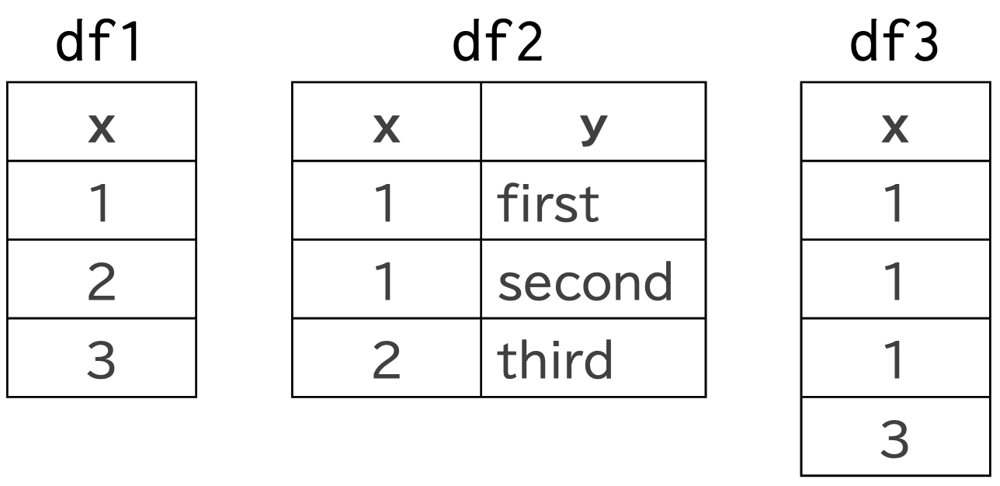
df1にdf2を左外部結合すると
df1 |>
left_join(df2, join_by(x)) |> # x列がキー
kable(align = "cl",) |> # センタリング
kable_styling(full_width = FALSE)| x | y |
|---|---|
| 1 | first |
| 1 | second |
| 2 | third |
| 3 | NA |
結合キーとなるxに対して、結合先のdf1の1は1つですが、df2の1は2つあるため、1対多の結合となり、結合後はxの1が2行に増え、df2のfirstとsecondの値が入っていることが分かります。
図で書くとこうなってます。
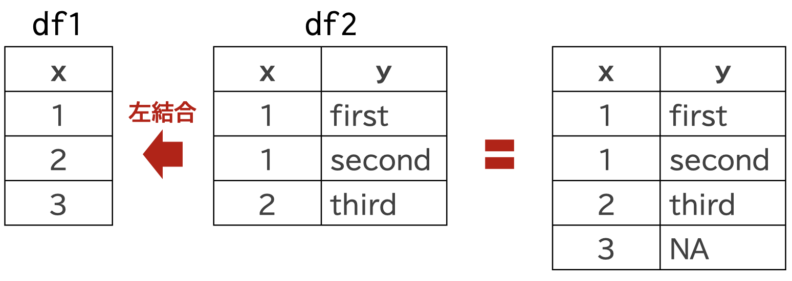
次に，df3にdf2を左外部結合すると
df3 |> left_join(df2)Joining with `by = join_by(x)`Warning in left_join(df3, df2): Detected an unexpected many-to-many relationship between `x` and `y`.
ℹ Row 1 of `x` matches multiple rows in `y`.
ℹ Row 1 of `y` matches multiple rows in `x`.
ℹ If a many-to-many relationship is expected, set `relationship =
"many-to-many"` to silence this warning.| x | y |
|---|---|
| 1 | first |
| 1 | second |
| 1 | first |
| 1 | second |
| 1 | first |
| 1 | second |
| 3 | NA |
warningsがでます。 このようにレアケースとして多対多関係が予想される場合，relationship = "many-to-many"を設定して警告をけしましょう。
| x | y |
|---|---|
| 1 | first |
| 1 | second |
| 1 | first |
| 1 | second |
| 1 | first |
| 1 | second |
| 3 | NA |
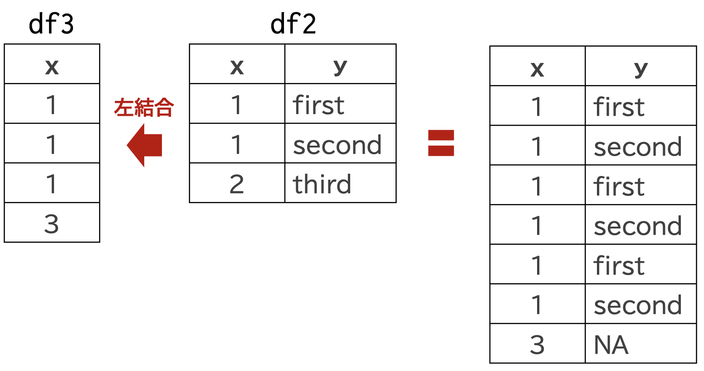
このように，結合するデータフレームのキーとなる変数で観測値がユニークでない場合は，dplyr::left_join()関数は，自動的にデータを補完して結合してしまうため，それを理解して使う必要があります。
10.6 JOIN関数のオプション
left_join()の引数には，以下のものが用意されています。
by: 結合する変数を指定する。join_by(): 複数のキーを指定する。変数名を指定する場合は，join_by(a == b, c == d)のようにする。copy: 特殊なときにしか使わないのでここでは無視suffix: 同じ変数名があるときに，結合後の変数名に付ける接尾辞を指定する。デフォルトだとxがつく。keep: 結合キーの保持を決める。デフォルトはnullで，結合先のキー変数のみが残る。trueだと両データフレームのキー変数が保持される。na_matches:NAとNaNなどの扱い。デフォルトは同じように処理する。multiple: 結合先の行が結合元に複数マッチする場合の処理を指定する。 結合先の各行に対して，デフォルトのallは、結合元で検出された全てのマッチを返します。これはSQLと同じ動作です。unmatched: 結合先の行が結合元にマッチしない場合の処理を指定する。デフォルトはallで，結合元の行を残す。-
relationship: 結合先と結合元のキーの対応関係を指定-
NULL: デフォルトで， -
one-to-one: 結合先と結合元のキーの対応関係が1対1のときに使う。 -
one-to-many: 結合元の各行が結合先の最大1行と対応 -
many-to-one: 結合先の各行が結合元の最大1行と対応 -
many-to-many: 多対多関係が想定されているときに使うらしい。
-